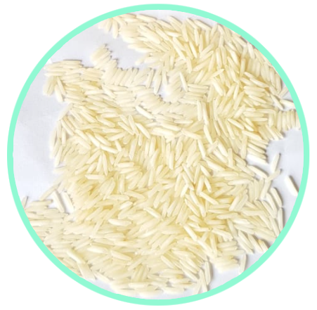
1121 Steam Basmati Rice
Long grain aromatic rice processed with steam for stable cooking quality.
Packaging: 5kg/10kg/25kg/50kg PP or BOPP bags.
Dedicated rice export page with segregated varieties and process types.

Long grain aromatic rice processed with steam for stable cooking quality.
Packaging: 5kg/10kg/25kg/50kg PP or BOPP bags.
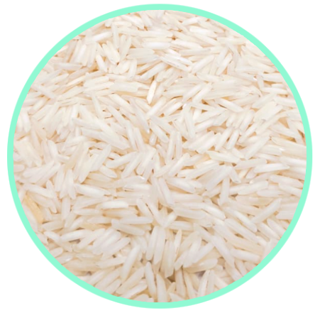
Raw milled basmati preferred for traditional fragrance and grain elongation.
Packaging: 5kg/10kg/25kg/50kg export packs.
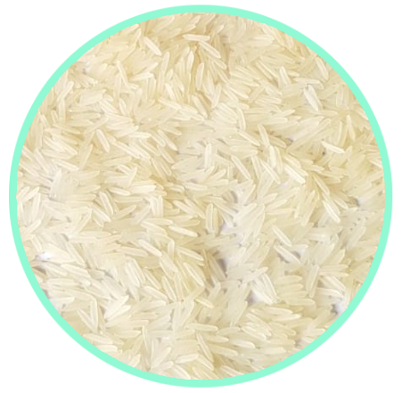
Parboiled and whitened basmati with strong grain hold after cooking.
Packaging: 10kg/25kg/50kg PP or custom label bags.
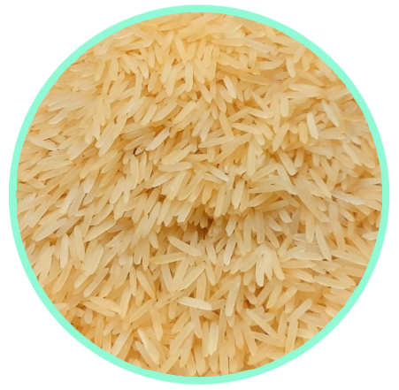
Golden parboiled basmati for high-volume retail and foodservice channels.
Packaging: 10kg/25kg/50kg export-grade sacks.
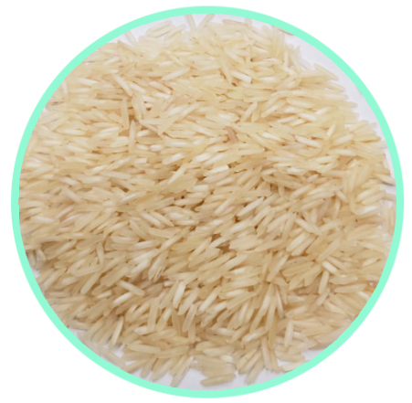
Popular long grain basmati with reliable texture and aroma.
Packaging: 5kg/10kg/25kg/50kg PP and BOPP bags.
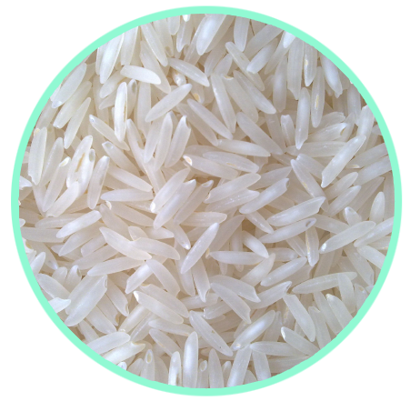
Raw 1509 variant suited for aromatic rice segments.
Packaging: 10kg/25kg/50kg bags.
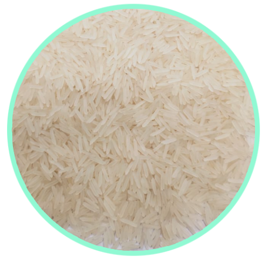
White sella basmati with low breakage and uniform cooking behavior.
Packaging: 10kg/25kg/50kg customizable packs.
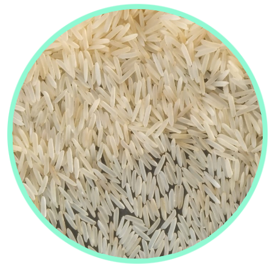
Golden sella rice for premium export demand in GCC and Europe.
Packaging: 25kg/50kg PP bags, private branding possible.
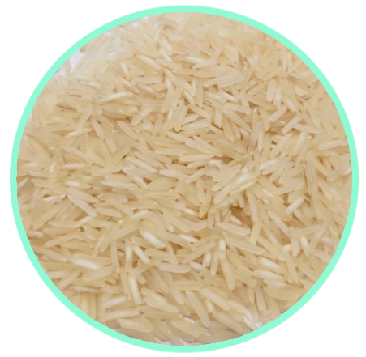
1401 steam variety balancing grain length and commercial value.
Packaging: 10kg/25kg/50kg export packs.
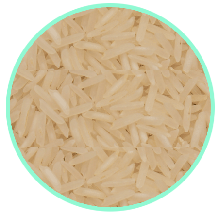
Raw 1401 basmati for buyers seeking natural grain characteristics.
Packaging: 25kg/50kg PP bags.
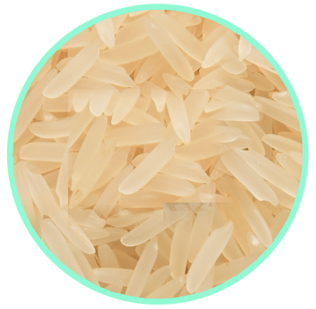
Parboiled white sella variant suitable for repeated bulk orders.
Packaging: 10kg/25kg/50kg bags.
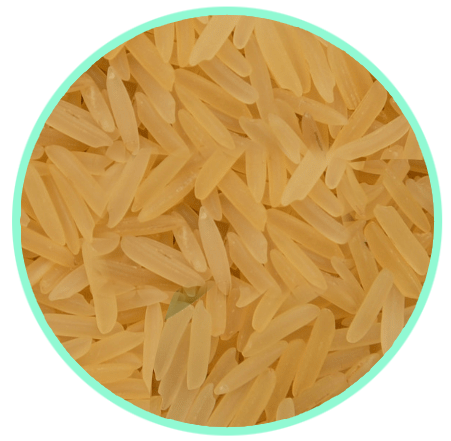
Golden sella 1401 for value-oriented long grain export programs.
Packaging: 25kg/50kg sacks with custom marking.
Indicative specification structure for buyer confirmation and contract finalization.
| Parameter | Basmati 1121 | Pusa Basmati |
|---|---|---|
| Grain Length | 8.20 mm+ | 7.40 mm+ |
| Broken Percentage | 1% - 2% | 2% - 5% |
| Moisture | 12% Max | 12% Max |
| Crop Year | Current | Current |
| Origin | India | India |
| Packing | 5/10/25/50kg | 5/10/25/50kg |
| Shelf Life | 24 Months | 24 Months |
| Parameter | Sona Masuri | IR64 / Ponni |
|---|---|---|
| Grain Length | 5.00 - 5.30 mm | 5.60 - 6.20 mm |
| Broken Percentage | 5% Max | 5% - 25% (grade based) |
| Moisture | 13% Max | 13% Max |
| Crop Year | Current | Current |
| Origin | India | India |
| Packing | 25kg/50kg | 25kg/50kg |
| Shelf Life | 18-24 Months | 18-24 Months |